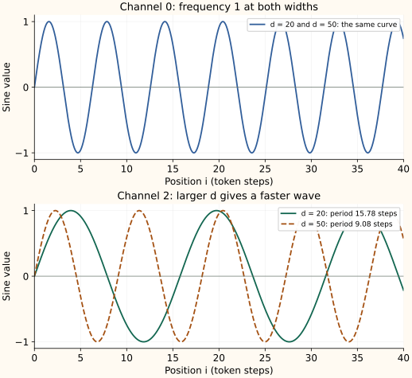
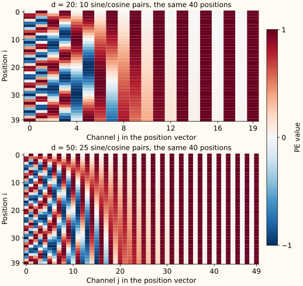

Position Encodings: Order Must Enter Somewhere
The permutation argument
Let $P$ permute token rows. If $Q=XW_Q$, then queries for $PX$ are $PQ$; similarly K and V are permuted. The score matrix becomes $P(QK^\top)P^\top$. Row-wise softmax respects this simultaneous row/column permutation, so the output is permuted by $P$ too.
This means self-attention without positional structure is permutation equivariant. It does not mean it returns the same sequence after shuffling: output rows are shuffled in correspondence with input rows. A causal mask already introduces order through visibility, but explicit positional information supplies additional ways to distinguish distances and arrangements.
Add a position vector to each token vector
A learned absolute position table gives each supported position its own trainable vector. The model learns how token and position features should coexist. Addition keeps width $d$ fixed; concatenation would increase width unless another projection reduced it. Addition does not make the two signals uniquely recoverable in every possible vector: the training problem learns a useful combined representation.
A table trained for positions 0 through 1023 has no learned entry at 4096. Extending the allocation alone does not train the new rows. Even a formula defined at arbitrary positions does not guarantee that a model trained on short contexts will use much longer contexts accurately.
Construct a sinusoidal encoding
For even width $d$ and channel pair $r$, define $\omega_r=10000^{-2r/d}$ and
Each pair is a clock rotating at a different frequency. Nearby positions change rapidly in high-frequency pairs and slowly in low-frequency pairs. The combination gives a multiscale signal that subsequent projections can use. These positions are measured in token steps, not characters, words, or seconds.
At width four, the frequencies are 1 and 0.01. Position zero is $(0,1,0,1)$. Position one is approximately $(0.8415,0.5403,0.0100,0.99995)$. Position two is approximately $(0.9093,-0.4161,0.0200,0.99980)$. The slow pair distinguishes long distances with gradual phase changes; the fast pair changes substantially over a few tokens.
Why sine and cosine, rather than some other function?
Sine and cosine are a useful design choice, not a requirement of Transformers. A position mechanism must give the model access to order. Learned position vectors, relative attention biases, RoPE, and ALiBi do that in other ways. The original paper's Section 3.5 tested learned and fixed sinusoidal positions and reported nearly identical results in those experiments.
The sinusoidal choice gives several useful properties together. Values stay between -1 and 1, positions can be evaluated without a learned lookup table, and paired channels make a fixed token offset an exact linear transformation. Multiple frequencies supply different position scales. None of these facts proves that sinusoidal positions must outperform other designs.
Other functions can encode position too. A raw position number $i$ distinguishes integer indices, for example, but grows without a bound and does not supply the same collection of phase scales. Even linear shift rules are not exclusive to trigonometry: features $(1,i)$ can represent $i\mapsto i+\Delta$ with a fixed matrix. Sine/cosine pairs are convenient because their shift rule also preserves a bounded, constant-length phase representation.
Why pair cosine with sine at the same frequency?
Fix one frequency $\omega$ and call the angle $\theta=i\omega$. The pair is $v_\omega(i)=(\sin\theta,\cos\theta)^\top$. Sine records one component of the phase, and cosine records the other. A single sine value does not determine an arbitrary phase: $\sin(0)=\sin(\pi)=0$, although the cosine values are 1 and -1.
| Phase $\theta$ | $\sin\theta$ | $\cos\theta$ | Sine after phase shift $\pi/2$ |
|---|---|---|---|
| 0 | 0 | 1 | $\sin(\pi/2)=1$ |
| $\pi$ | 0 | -1 | $\sin(3\pi/2)=-1$ |
The old sine value is identical in both rows, but the shifted sine values differ. Keeping cosine supplies the missing phase information. The pair determines phase modulo $2\pi$; one pair is still periodic, so it is not a globally unique identifier for every real-valued position.
This does not mean a sine-only design can never encode a finite set of token indices. It can. The advantage of the matched pair is the exact shift rule below, rather than an assertion that sine alone must produce collisions in every discrete context.
Cosine is itself a phase-shifted sine: $\cos\theta=\sin(\theta+\pi/2)$. Two sine channels with that quarter-cycle phase difference are therefore the same construction. Two copies of the same sine add no information. Pairing a sine at one frequency with a cosine at a different frequency also loses this simple two-channel shift rule.
Why a relative shift is a linear transformation
Keep the frequency $\omega$ fixed. Moving from position $i$ to $i+\Delta$ adds phase $\phi=\Delta\omega$. With $s=\sin(i\omega)$ and $c=\cos(i\omega)$, the angle-addition identities give:
Both new coordinates use both old coordinates. This is the specific reason for retaining sine and cosine together. Group the two equations into a matrix:
The matrix depends on the offset $\Delta$ and this pair's frequency, not on the starting position $i$. The same matrix shifts every position by that offset. With $\omega=1$ and $\Delta=1$, it is approximately:
Applied to position 0's pair $(0,1)^\top$, it gives position 1's pair $(0.8415,0.5403)^\top$. Applied to position 1's pair, the same matrix gives position 2's pair $(0.9093,-0.4161)^\top$. For the full encoding, each frequency pair has its own such rotation.
A sine-only channel at that frequency cannot generally obtain its next value by a fixed scalar multiplication: the first angle-addition equation needs the old cosine too. A model could use other features or learn a more complicated relationship, but it would no longer have this explicit per-pair rule.
This structure motivates learning relative-offset relationships. It does not force arbitrary attention scores to depend only on distance: projected token content, cross terms, and learned query/key matrices still matter. The original paper presented easier relative-position learning as a hypothesis, not a guarantee about what every trained head will learn.
What else does the pair provide?
Its length does not depend on the position:
For even width $d$, the complete position vector has squared length $d/2$. This statement concerns the position vector alone; adding token embeddings changes the combined length.
The raw dot product between two matched pairs depends only on their offset:
Using just sine at that frequency gives a different product:
The second term depends on the sum of the absolute positions, not just their gap. Adding the matched cosine product cancels that term. This explains another benefit of the pair beyond having two different channel values.
For all pairs together, $P(i)^\top P(j)=\sum_r\cos((i-j)\omega_r)$. This is another useful relative-offset structure. It oscillates, so it does not say that the dot product always decreases with distance. Learned attention after projections need not preserve this raw dot-product identity.
Why use several frequencies and the number 10000?
One frequency gives one period. Several frequencies let a token offset produce phase changes at several scales. With $\omega_r=10000^{-2r/d}$, each pair's wavelength in token steps is:
Adjacent wavelengths have the same ratio, so they are evenly spaced on a logarithmic scale. At width four, they are $2\pi$ and $200\pi$: about 6.28 and 628.32 token steps. Rapid pairs change substantially across a few tokens, while slower pairs change gradually over larger offsets.
The sine and cosine within each pair share a frequency so their rotation rule holds. Frequencies differ between pairs to supply the range of scales. A single-frequency pair lacks that range even though it has the same rotation identity.
10000 is a chosen base, not a uniquely required mathematical constant. Other bases and frequency sets are possible. For finite even $d$, the largest divisor is $10000^{1-2/d}$, below 10000; its wavelength approaches $10000\cdot2\pi$ as width grows. Swapping the sine/cosine channel order would also just change the coordinate convention, with a correspondingly changed rotation matrix.
These properties help explain the design; they do not guarantee reliable use of arbitrarily large positions in finite precision. The original paper's longer-sequence extrapolation was a motivation. Defining vectors at new positions and obtaining accurate predictions there remain different questions.
How does encoding depend on the dimensions?
Understanding positional encoding in Transformers provides a useful visual comparison of embedding widths 20 and 50. The figures below follow that idea, calculated from our formula. There are two different things to keep track of: a channel's index and the vector's total width.
| Symbol | Meaning |
|---|---|
| $i$ | Token position, the row of a positional-encoding table. |
| $j$ | One channel within that position vector, from 0 to $d-1$. |
| $r=\lfloor j/2\rfloor$ | The sine/cosine pair index. Channels 0 and 1 use $r=0$; channels 2 and 3 use $r=1$. |
| $d$ | Total embedding width, often called $d_{\mathrm{model}}$. It is not the sequence length or the number of attention heads. |
The frequency assigned to channel $j$ is therefore:
The value at position $i$ is $\sin(i\omega_j)$ for an even channel and $\cos(i\omega_j)$ for an odd channel. Both channels in a pair share the same frequency.
Keep $d$ fixed: moving to a later pair increases $2r/d$, lowers the frequency, and lengthens the wavelength. Holding the channel index fixed while changing the total width is a different comparison, as the next example shows.
Hold the channel index fixed and change d
Channels 0 and 1 always have pair index $r=0$. Their exponent is zero at every embedding width, so they are always $\sin(i)$ and $\cos(i)$.
Now hold channels 2 and 3 fixed. Their pair index is $r=1$, so their frequency is $10000^{-2/d}$. At width 20, the exponent magnitude is $2/20=0.1$; at width 50 it is $2/50=0.04$. The larger width gives a smaller divisor and a higher frequency for these same channels:
| Quantity for channels 2 and 3 | $d=20$ | $d=50$ |
|---|---|---|
| Pair index $r$ | 1 | 1 |
| Exponent $2r/d$ | 0.1 | 0.04 |
| Divisor $10000^{2r/d}$ | 2.5119 | 1.4454 |
| Frequency $\omega_r$ | 0.398108 | 0.691831 |
| Wavelength $2\pi/\omega_r$ | 15.7826 token steps | 9.0820 token steps |
| Channel 2 sine at $i=5$ | 0.9132 | -0.3123 |
| Channel 3 cosine at $i=5$ | -0.4075 | -0.9500 |
For those last two rows, calculate the phase first: $5(0.398108)\approx1.99054$ or $5(0.691831)\approx3.45915$. Applying sine and cosine gives the displayed channel values. Thus changing $d$ changes actual values, not just the number of slots in the vector.


Hold the relative location within the vector fixed
A different comparison holds the fraction $q=2r/d$ fixed. Then the frequency $10000^{-q}$ is unchanged. For example, $q=0.4$ corresponds to $r=4$ at width 20 and $r=10$ at width 50. These are channels 8/9 and 20/21, respectively, but both pairs have frequency $10000^{-0.4}\approx0.025119$.
This explains what a wider vector adds. Its $d/2$ pairs sample the frequency curve at fractions $0,2/d,4/d,\ldots,1-2/d$. Larger $d$ gives more closely spaced samples of the same log-frequency curve. The same numeric channel index moves to a different relative location, which is why its frequency changes.


Each pair still has squared length 1, so the complete positional vector's squared length grows from 10 to 25 in this comparison. More channels do not automatically mean a longer supported context or better accuracy. The base, the sampled frequencies, numerical precision, and the model's training still matter.
The two figures are original calculations, not training results. The figure-generation script checks the frequencies, wavelengths, and sample values and reproduces both diagrams. The linked article includes further interactive visualizations of this dependency.
Three different ways to expose position
| Mechanism | Where position enters | Main question to check |
|---|---|---|
| Learned or sinusoidal absolute | Added to input vectors | How are positions beyond training represented? |
| RoPE | Rotates query/key coordinates | How do phases behave at the requested distances? |
| ALiBi | Adds distance bias to logits | How strongly are distant positions penalized? |
These approaches are not interchangeable checkpoint options. They change the function a model was trained to compute. A pretrained model expecting learned absolute positions does not become a well-trained RoPE model by replacing one line of inference code.
A reference sinusoidal table
def sinusoidal_positions(length, width):
assert width % 2 == 0
positions = np.arange(length)[:, None]
frequencies = 10000.0 ** (-np.arange(0, width, 2) / width)
phase = positions * frequencies[None, :]
table = np.empty((length, width))
table[:, 0::2] = np.sin(phase)
table[:, 1::2] = np.cos(phase)
return tableGeneration with a cache must use absolute positions that continue after the prefix; resetting each new token to position zero changes its relation to cached keys. Packed documents need an explicit position-ID convention alongside their attention boundaries. Padding should not accidentally consume or reset meaningful positions unless the model was trained that way.
Try it: Does a sinusoidal encoding allow evaluation at one million positions?
The formula does. Whether the model remains accurate at those positions is an empirical question about its training distribution, phase behavior, attention, and task. A defined encoding and useful length generalization are different claims.
Continue with rotation
For a fully worked eight-channel example and a closer look at input mixing and positional geometry, read Positional Encoding Deep Dive.
The sinusoidal construction appears in the original Transformer. RoPE uses rotations inside the attention dot product, where a relative-offset identity can be stated more directly.